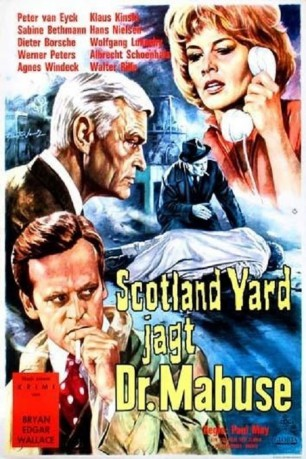

#12131 Dr. Mabuse 5 - Scotland Yard jagt Dr. Mabuse
Alternativ: Dr. Mabuse vs. Scotland Yard (Englischer Titel)
 
 IMDB-Wertung: 5.5 / 10
IMDB-Wertung: 5.5 / 10  Metascore: 0
Metascore: 0 
Mabuse ist tot, aber sein Geist lebt weiter. Unter seinem Zwang werden absonderliche Verbrechen begangen, getrieben von einer an Wahnsinn grenzenden Herrschersucht über Menschen und Völker. Prof. Laurentz gelingt die Erfindung eines Gerätes, das jedem Menschen einen fremden Willen aufzwingen kann. Die tüchtigsten Männer von Scotland Yard und die deutsche Kripo werden eingesetzt. Doch Mabuses verbrecherische Phantasie ist zu genial, als daß sie schnell durchschaubar wäre. Mabuse scheint dem Sieg seiner wahnsinnigen Idee nahe.
Jahr: 1963
Dauer: 90 Minuten
FSK: 16
Land: West-Deutschland Studio: Gloria Filmverleih AGTonspuren:
Untertitel:
Auflösung: 1080p (1488x1080) Größe: 6707 MB
Genre: Thriller, Horror, Sci-Fi, Krimi, Mystery
Regisseur: Paul May
Drehbuch: Bryan Edgar Wallace, Norbert Jacques, Ladislas Fodor
Soundtrack: Rolf A. Wilhelm
Darsteller:
 Peter van Eyck als Major Bill Tern
Peter van Eyck als Major Bill Tern- Agnes Windeck als Gwendolyn Tern
 Dieter Borsche als George Cockstone
Dieter Borsche als George Cockstone Werner Peters als Inspektor Vulpius
Werner Peters als Inspektor Vulpius Klaus Kinski als Inspector Joe Wright
Klaus Kinski als Inspector Joe Wright Wolfgang Preiss als Dr. Mabuse's Ghost
Wolfgang Preiss als Dr. Mabuse's Ghost- Sabine Bethmann als Nancy Masterson
- Albrecht Schoenhals als Sir Robert General Allingham
- Wolfgang Lukschy als Ernest Hyliard
- Ady Berber als Hangman
 Walter Rilla als Dr. Pohland / 'Dr. Mabuse'
Walter Rilla als Dr. Pohland / 'Dr. Mabuse'- Jürgen Draeger als (uncredited)
- Ruth Wilbert als Prinzessin Diana
- Hans Nielsen als Chef von Scotland Yard
- Albert Bessler als Konservator
- Anneliese Würtz als Rose
- Sigurd Lohde als Briefträger
- Alfred Braun als
- Gert Wiedenhofen als Kloppe
- Michael Gahr als (uncredited)
- Joachim Nottke als Radio Announcer (uncredited)
Datei: X:\6-Hexalogie(A-Z)\Dr. Mabuse\Dr. Mabuse 5 - Scotland Yard jagt Dr. Mabuse (1963, FSK16, 1488x1080).mkv seit 11.12.2019
Festplatte: HD Collection-3(N-Z)-6(A-Z)
 Es gibt insgesamt 9 Filme in der Gruppe '6-Hexalogie(A-Z)\Dr. Mabuse'
Es gibt insgesamt 9 Filme in der Gruppe '6-Hexalogie(A-Z)\Dr. Mabuse'